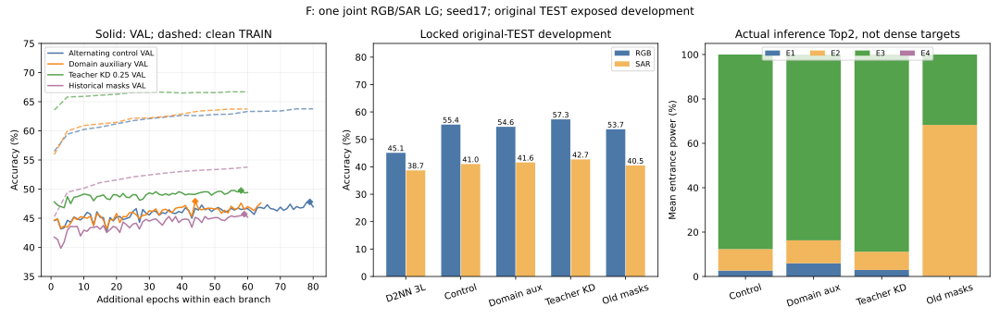
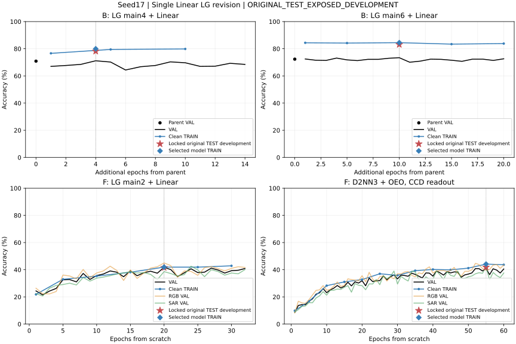
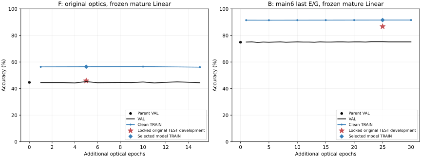

KD .25共60轮，VAL选E58；TRAIN66.58%、VAL49.75%、原TEST开发50.00%（RGB57.30%、SAR42.70%）。固定D2NN三层仍为45.10/38.70%。教师仅训练使用、无CNN进LG推理；样本/原划分和OEO合同保持，单seed17，未宣称达到原图范围。自己的worker已退出且无GPU分配。旧相位warm-start兼容性已核，尚未冒充完成候选。

B已由用户接受，不再搜索；J保持原样，D暂缓。F仍为两个联合RGB/SAR模型各测两域，不拆单域LG。下方早期各阶段数字是保留的历史候选。
| F LG交替候选 | 轮数 | TRAIN / VAL | 锁后原TEST开发RGB / SAR |
|---|---|---|---|
| control | 80/选E79 | 63.78% / 47.80% | 55.40% / 41.00% |
| domain | 64/选E44 | 62.23% / 47.90% | 54.60% / 41.60% |
固定三层D2NN为RGB45.10/SAR38.70%，每层含末层同一intensity_softsign OEO、无Linear。LG两层同一OEO、唯一末端Linear；主干整面478，四专家各224加30间隔，路由器可训练区224，画布518仅含边界。用户已确认主干整面478，router保留224（沿用A/B），未改变光学合同。
旧79.5/74.9版含冻结CNN、dense四路、无OEO、窗口读出；旧三组相位形状可逐元素加载到新LG，但不能继承旧函数或精度。CNN目前只作为TRAIN-only教师，新LG推理无CNN。136项CPU检查与真实TRAIN GPU准入已通过，KD .25候选已启动，.75仅准备未启动。
最新人工范围：J为残差实验，本轮保持原样，不再待确认。A/B/F本轮已完成；D仍按此前要求暂缓，未重跑。完成训练不等于精度目标全部达成。
所有新LG均使用同一末端单层Linear；既往TEST已经参与开发，以下均为开发结果，不是独立TEST泛化。A/B原D2NN完整60轮结果保护，不重训来压低参照。
| 图 | 安排 |
|---|---|
| a | 三组LG补Linear已完成保护；D2NN三层无OEO/Linear。Kather新两层LG作为b两层的唯一权重来源。 |
| b | 仅LG四/六层末E/G+Linear有限微调；冻结入口路由/早期相位。D2NN3/5/7逐层OEO无Linear，不再训练。 |
| d | 按人工要求暂缓，后续需要新Linear与同配置点对齐。 |
| f | 保留原RGB/SAR十分类双域子集和空间划分，从头LG、D2NN各一组；同OEO，无前端，LG有Linear、D2NN无Linear。 |
| g | 只读核验，保护历史终身学习结果；同源EuroSAT双模态联合输入，不等于f单模态双域。 |
| j | 残差消融：按最新人工要求排除本轮修改，保持旧模型与硬件数据。 |
| 任务 | 资源 | 实际状态 | 轮数 | TRAIN / VAL / 原TEST开发 | 按近期完整epoch估算剩余 |
|---|---|---|---|---|---|
| panel_b_linear_joint4_s17_20261031 | 4090 / 两组共享 | complete | 完成14，选E4 | 79.95% / 71.14% / 78.19% | — |
| panel_b_linear_joint6_s17_20261031 | 4090 / 两组共享 | complete | 完成20，选E10 | 84.47% / 73.40% / 83.11% | — |
| panel_f_lg_s17_20261031 | A100 / 两组共享 | complete | 完成32，选E20 | 41.92% / 41.80% / 41.60% | — |
| panel_f_d2nn_s17_20261031 | A100 / 两组共享 | complete | 完成60，选E55 | 44.15% / 40.85% / 41.90% | — |
| 项目 | 图f原协议与此次重跑 | 图g实际正式协议 |
|---|---|---|
| 预测目标 | 相同十类地物标签：AnnualCrop、Forest、HerbaceousVegetation、Highway、Industrial、Pasture、PermanentCrop、Residential、River、SeaLake。不是RGB/SAR二分类或配对匹配。 | |
| 一次输入 | 一张RGB或一张SAR，三通道固定拼图；两个域分别评价 | 同地块RGB和SAR共同输入；RGB含共享冻结视觉特征条，SAR占第四tile |
| 规模 | TRAIN6000、VAL2000、原空间TEST2000张，两域均衡 | TRAIN15998、VAL5465、TEST5429对，同地点两模态绑定 |
| 目的/指标 | 同一模型处理两个域；分别报告普通准确率、宏召回、路由功率 | EuroSAT作为四任务终身学习第一任务；正式主指标宏平均召回 |
| 已核验 | F三个划分的全部像素/标签逐一对应G完整数据的同划分子集；保留原空间组，无临时筛样本。 | |
双方OEO均为原intensity_softsign数学形式。当前a/b/f每个主相位层含末层均OEO；历史g末层省略显式OEO回编码，放置差异保留，不能把旧g指标说成已统一重跑。原数据授权依现存MIT记录，不标为CC BY4.0。
所有运行保留profile、源commit/SHA、best/last、逐轮TRAIN/VAL、锁权重记录、逐样本预测与实际Top2功率/capture。D2NN没有末端Linear，因此电子读出容量并不匹配，不能称等电子预算结构因果消融。
F首轮LG训练/验证约42%，D2NN训练44%/验证41%；低性能不能简单归因于严重过拟合。B4联合候选低于父，保留78.72%；B6当前83.11%，仍未比固定D7高15pp。旧冻结CNN前端的79.50/74.90不能填入当前无前端版本，全部候选保留。

黑线VAL，蓝线干净TRAIN；红星仅为锁权重后原TEST开发结果。TRAIN菱形为选中权重的完整TRAIN重评。不同候选不拼为连续训练。
只优化原Linear，光学相位逐元素不变。TRAIN交叉熵+.001/2倍相对父头的平方范数，最多150个L-BFGS内部迭代；每5步导回float32 canonical模型，VAL选模并保留父。末梯度仍非零，不能宣称已经求得全局最优或将剩余差距证明为光学容量上限。
| 任务 | 数值预算/选段 | 选中TRAIN / VAL / 原TEST开发 | 最终迭代TRAIN | 最终梯度最大值 |
|---|---|---|---|---|
| f_lg_convex | 150内部迭代/选第26段 | 50.22% / 42.60% / 42.40% | 50.65% | 0.00577 |
| b_lg4_convex | 150内部迭代/选第30段 | 87.16% / 75.27% / 83.51% | 87.16% | 0.00336 |
| b_lg6_convex | 150内部迭代/选第8段 | 87.21% / 75.27% / 84.18% | 90.70% | 0.00319 |
B4达到83.51%，比固定D5高16.22pp；B6为84.18%，比固定D7高12.10pp，尚未15pp。F为42.40%，改善有限，低分原因仍在定位。
与上一轮使用相同原始父、相同原W锚定惩罚和150内部迭代上限；只用TRAIN求可逆坐标，导出时吸收到原单Linear。不存在推理白化层或新电子参数。
| 任务 | TRAIN / VAL / 原TEST开发 | 最终原W梯度最大值 |
|---|---|---|
| f_lg_convex | 55.98% / 44.65% / 45.25% | 5.09e-07 |
| b_lg6_convex | 91.30% / 74.87% / 86.70% | 0.000737 |
B6为652/752=86.70%，相对固定D7高14.63pp，仍差3个正确达到15pp，不能四舍五入声称达标。F为905/2000=45.25%，原训练约56%而验证44.65%，仍需定位光学表征与泛化，不能将正则头最优等同于模型容量上限。
此前显式后验比较已存在的last PT和VAL选择PT，没有新增训练。两份last开发正确数分别仍为F905/2000、B6 652/752，未带来提升；不能把该后验评估称作VAL选择。
新阶段F冻结唯一Linear、训练原R/E/G；B6冻结Linear/入口路由/早期相位，只训练末E/G。TRAIN-only原增强，父E0参加VAL选模，各最多30轮；无新电子参数或推理模块。B4和A已达标保护。
| 任务 | 状态 | 轮数 | TRAIN / VAL / 原TEST开发 |
|---|---|---|---|
| figure_mature_f_lg_convex_s17_20261031 | complete | 15/30 | 56.45% / 45.25% / 45.90% |
| figure_mature_b_lg6_convex_s17_20261031 | complete | 30/30 | 91.56% / 75.27% / 86.70% |
A三组69.95/82.96/81.55%，均超过各自固定D2NN20pp。B两/四/六层69.95/83.51/86.84%，D3/5/7为53.99/67.29/72.07%；差15.96/16.22/14.76pp，六层仍差2个正确到15pp，不作达标声明。B6采用现存光学last的明确后验开发候选653/752；VAL选择权重652/752也保留。
F最终保留VAL选择918/2000=45.90%，RGB53.40/SAR38.40%；固定D2NN41.90%，RGB45.10/SAR38.70%。原始无前端协议下性能仍低；不存在CNN分数移植。后验last F917/2000更低，不替换。

已发现需另外处理的历史架构例外：图j正式原模型使用log1p/行LayerNorm/ReLU/RMS，而非本轮a/b/f的intensity_softsign；还有逐层电子残差与学习alpha、dense四路和Linear256→20。该结论按正式manifest历史Git及六份依赖SHA核对，未改T18或旧CCD，不能宣称全图OEO已经统一。图g末层OEO放置差异亦保留。